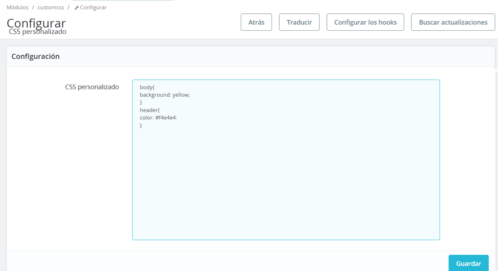

Módulo PrestaShop - CSS Personalizado

Descripción:
CustomCSS es un módulo de PrestaShop que te permite añadir fácilmente CSS personalizado a tu tema de PrestaShop sin modificar los archivos de tema directamente. Este módulo es perfecto para realizar pequeños ajustes de estilo o añadir estilos personalizados a tu tienda de PrestaShop.
Características
- Interfaz sencilla para añadir CSS personalizado- El CSS se inyecta automáticamente en el de las páginas de tu tienda
- Compatible con PrestaShop 1.6 y versiones posteriores
Instalación
1. Descarga la carpeta `customcss`.2. Sube la carpeta al directorio `modules` de tu PrestaShop.
3. Ve a la sección "Módulos" en tu back office de PrestaShop.
4. Busca "CSS personalizado" en la lista de módulos y haz clic en "Instalar".
Uso
1. Después de la instalación, ve a la página de configuración del módulo.2. En el área de texto proporcionada, introduce tu código CSS personalizado.
3. Haz clic en "Guardar" para aplicar los cambios.
4. Tu CSS personalizado se aplicará ahora a tu tienda.
Configuración
No se necesita ninguna configuración adicional. Simplemente agrega tu CSS en el área de texto proporcionada en la página de configuración del módulo.Compatibilidad
Este módulo es compatible con las versiones 1.7 y posteriores de PrestaShop.Nota: Si tuviera algún problema con la instalación, le brindamos el soporte gratuito. Contacte con nosotros para cualquier duda y estaremos encantados de ayudarle. Email: chrishb2000@gmail.com